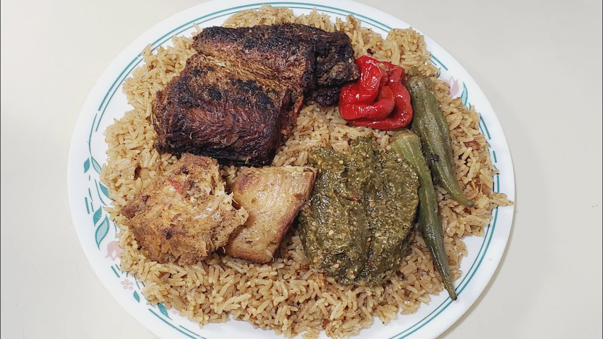

Senegambian Jollof Rice 🍚
Jollof rice aka Benachin (pronouns Ben-a-chin) is a traditional
Gambian dish that has become a worthy variety in West African cuisines.
It is made up of rice, vegetables, and meat that have all been cooked together.

Let's start cooking!🍴
Ingredient list (Serving: 2 people):
- ½ lb boneless beef (diced)
- 3 cups of rice
- 4 onions (peeled and diced)
- 2 tomatoes
- Bay leaves
- 3 cloves garlic
- 2 hot peppers
- 3 tsp tomato puree
- 1 ½ cups vegetable oil
- 2 bell peppers (sliced)
- 1 large eggplant (chopped)
- ½ small cabbage (chopped)
- 6 cups of water
- Salt to taste
- Black pepper
- Vinegar
Instructions:
- Put the beef pieces into a bowl.
- Season the meats with salt, black pepper, garlic and a dash of vinegar, then leave undisturbed for 30 minutes.
- Heat a large pot, add the vegetable oil and fry the beef until it is brown
- Add the onions to the beef and cook until brown.
- Add the tomatoes and the tomato puree together with the minced hot pepper.
- Stir these ingredients together and cook for 15 minutes.
- Pour in the water and bring to a boil. Add the chicken to the pot.
- Add the chopped cabbage, chopped eggplant and the bay leaves to the pot.
- Sprinkle salt to taste.
- Use a large spoon to dish out the vegetables and then set them aside
- Rinse the raw rice in cold water, then add to the pot. Add the sliced bell peppers and bring to a boil.
- Reduce the heat and let the ingredients simmer.
- When the liquid has been absorbed and the rice is tender, turn off the heat and place in a serving dish. Arrange the vegetables on top of the rice and beef. Serve hot